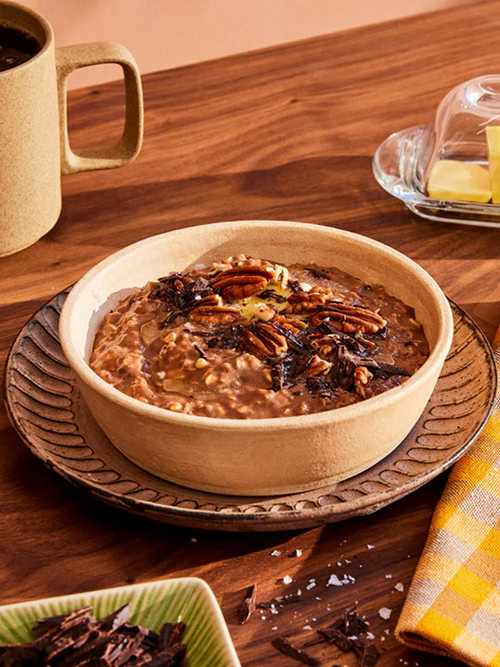
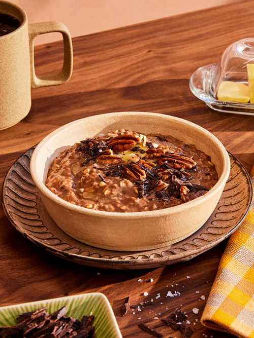

for protein-fortified
for protein-fortified
 for prebiotic oatmeal that supports for digestion, regularity, and gut health
for prebiotic oatmeal that supports for digestion, regularity, and gut health 
The fiber of our being
Resistant starch fiber is a naturally-occurring prebiotic that’s been part of the human diet for
over 10,000 years.
Our Science
→


 
